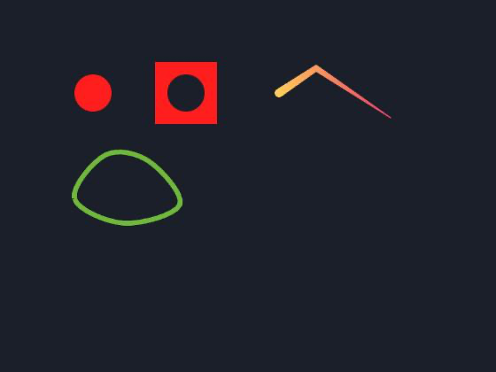
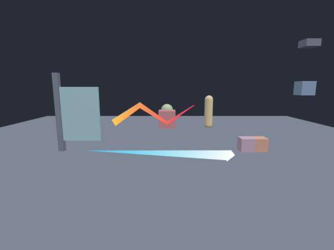
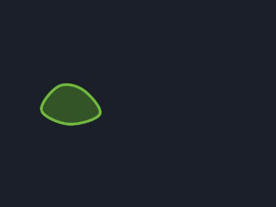

63 · Unity API: LineRenderer, TrailRenderer, SpriteMask and SpriteShape
Goal: draw lines, trails, masked pictures and filled shapes with Unity's renderer components and API.
All of them are components (Inspector ▸ + Add component ▸ lineRenderer / trailRenderer / spriteMask / spriteShape) and Unity classes of the same name.
LineRenderer#

Inspector ▸ + Add component ▸ lineRenderer on an object. A poly-line drawn as a ribbon. In 2D it is a quad strip with a width and a colour gradient; in 3D a ribbon that turns towards the camera.
In the file (an entity in scenes/main.scene.json):
{ "type": "lineRenderer", "points": [[0, 0, 0], [60, -40, 0], [120, 0, 0], [180, 40, 0]],
"startWidth": 14, "endWidth": 2, "startColor": "#ffd166", "endColor": "#ef476f",
"cornerVertices": 4, "capVertices": 4 }| Field | Meaning |
|---|---|
points |
[x, y, z] list. useWorldSpace: false (default) = relative to the object; true = world coordinates. |
startWidth, endWidth, widthCurve ([[t, multiplier]…]), widthMultiplier |
width along the line |
startColor, endColor, or colors = [[t, "#rrggbb", alpha]…], alpha |
colour along the line |
loop |
close the line |
cornerVertices, capVertices |
> 0 rounds the joints and the ends |
blend |
normal, add, multiply, screen (2D) |
File: scripts/Laser.js (new file, the whole file: a laser from the object to the mouse that stops at walls)
import { MonoBehaviour, LineRenderer, Physics2D, Vector2, Vector3, Color, Gradient, GradientColorKey, GradientAlphaKey, AnimationCurve, UnityInput as Input } from 'nord';
export default class Laser extends MonoBehaviour {
Start() {
this.line = this.AddComponent(LineRenderer);
this.line.useWorldSpace = true;
this.line.startWidth = 6; this.line.endWidth = 1;
this.line.numCapVertices = 4;
const g = new Gradient();
g.SetKeys([new GradientColorKey(Color.red, 0), new GradientColorKey(Color.yellow, 1)], [new GradientAlphaKey(1, 0), new GradientAlphaKey(0, 1)]);
this.line.colorGradient = g; // red to yellow, fading out
this.line.widthCurve = AnimationCurve.Linear(0, 1, 1, 0.2);
}
Update() {
const from = this.transform.position, to = new Vector2(Input.mousePosition.x, Input.mousePosition.y);
const hit = Physics2D.Linecast(new Vector2(from.x, from.y), to);
const end = hit.collider ? hit.point : to;
this.line.positionCount = 2;
this.line.SetPosition(0, new Vector3(from.x, from.y, 0));
this.line.SetPosition(1, new Vector3(end.x, end.y, 0));
}
}Unity members: positionCount, SetPosition, GetPosition, SetPositions, GetPositions, startWidth, endWidth, widthMultiplier, widthCurve, startColor, endColor, colorGradient, loop, useWorldSpace, numCornerVertices, numCapVertices, Simplify(tolerance), sortingOrder, enabled.
Trap: Textured lines (
textureMode) andalignmentare stored but not drawn: lines are solid colours (use a gradient for dashes of colour).
TrailRenderer#

Leaves a fading ribbon behind a moving object.
In the file:
{ "type": "trailRenderer", "time": 0.6, "minVertexDistance": 4, "startWidth": 12, "endWidth": 0, "startColor": "#ffffff", "endColor": "#4cc9f000" }time = seconds a point lives, minVertexDistance = how far the object moves before a new point, emitting, autodestruct. Width and colour fields are the same as the line's, with t = 0 at the head and t = 1 at the oldest point. Script: time, emitting, minVertexDistance, autodestruct, Clear(), AddPosition(v), GetPosition(i), positionCount, widths and colours like LineRenderer.
File: scripts/Streak.js (new file, the whole file: a trail only while dashing)
import { MonoBehaviour, TrailRenderer, Color, UnityInput as Input, KeyCode } from 'nord';
export default class Streak extends MonoBehaviour {
Start() {
this.trail = this.GetComponent(TrailRenderer);
this.trail.startColor = Color.white; this.trail.endColor = new Color(0.3, 0.8, 0.95, 0);
this.trail.emitting = false;
}
Update() { this.trail.emitting = Input.GetKey(KeyCode.LeftShift); }
}SpriteMask#
Shows or hides sprites where they overlap a shape: a spotlight, a window, a reveal, a fog of war.
- Hierarchy ▸ + Create ▸ Empty named
Window, Inspector ▸ + Add component ▸ spriteMask,shape=circle,radius= 40. - Select a sprite object. In its
spritecomponent setmaskInteractiontovisibleInsideMask(only the part inside the circle shows) orvisibleOutsideMask(the circle is a hole). - Press Play and move
Window: the picture is revealed only under it.
In the file (the two entities):
{ "name": "Window", "transform": { "pos": [200, 150, 0] }, "components": [ { "type": "spriteMask", "shape": "circle", "radius": 40 } ] },
{ "name": "Wall", "transform": { "pos": [200, 150, 0] }, "components": [ { "type": "sprite", "texture": "assets/sprites/wall.png", "maskInteraction": "visibleInsideMask" } ] }| Field | Meaning |
|---|---|
shape |
rect (size), circle (radius), texture (the opaque pixels of texture) |
offset |
shifts the shape inside the object |
maskInteraction on sprite / animatedSprite |
none, visibleInsideMask, visibleOutsideMask |
All masks in a scene act together (a sprite is visible where any mask covers it). Script: SpriteMask.Of(entity) / GetComponent(SpriteMask) with shape, size, radius, sprite, alphaCutoff; SpriteRenderer.maskInteraction = 'VisibleInsideMask'.
Trap: The masked sprite is redrawn on a canvas when it, or a mask, moves. A few dozen masked sprites are fine; masking a big particle field is not. 3D has no sprite masks (the component does nothing there and warns once).
SpriteShape (spline terrain)#
A filled shape from a list of points, with an outline, and optionally a collider that follows it: hills, pools, platforms.
In the file:
{ "type": "spriteShape", "points": [[-80, 20], [-30, -50], [40, -40], [90, 30], [0, 60]], "closed": true, "smooth": true, "splineDetail": 8,
"fillColor": "#3a5f2c", "edgeColor": "#7bc043", "edgeWidth": 8, "generateCollider": true }
| Field | Meaning |
|---|---|
points |
the outline (2D) |
closed |
true = filled polygon, false = an open line (an edge) |
smooth, splineDetail |
round the outline through the points (Catmull-Rom, splineDetail points per segment) |
fillColor, edgeColor, edgeWidth |
looks |
generateCollider |
adds a polygon collider (closed) or edge collider (open) that follows the outline. Use physics.engine: "matter" for collisions. |
File: scripts/Hills.js (new file, the whole file: grow a hill by script)
import { MonoBehaviour, SpriteShapeController, Vector3, Color } from 'nord';
export default class Hills extends MonoBehaviour {
Start() {
const shape = this.GetComponent(SpriteShapeController);
shape.spline.Clear();
for (let i = 0; i <= 8; i++) shape.spline.InsertPointAt(i, new Vector3(i * 60, -Math.sin(i / 8 * Math.PI) * 80, 0));
shape.spline.SetTangentMode(0, 'Continuous'); // smooth
shape.autoUpdateCollider = true;
shape.fillColor = new Color(0.2, 0.4, 0.2);
shape.RefreshSpriteShape();
}
}spline.GetPointCount(), GetPosition(i), SetPosition(i, v), InsertPointAt, RemovePointAt, Clear, SetTangentMode, isOpenEnded; splineDetail, autoUpdateCollider, edgeWidth.
Camera, curves and gradients#
Camera.main.WorldToScreenPoint, ScreenPointToRay and friends are on the 3D page; AnimationCurve, Gradient and the colour types are on the math page. For custom surfaces and full-screen effects use Shadertoy in place of Shader and Material.
Check yourself#
- A
LineRendererwith two points andstartWidth14 /endWidth2 shows a tapered gradient line (screenshots above). - A sprite with
maskInteraction: visibleInsideMaskshows normally while the scene has nospriteMask; as soon as there is one, only the part inside it is visible (visibleOutsideMask: only the part outside). node --test runtime/core/unity-extra.test.mjscovers the strip geometry (widths, mitres, smoothing, simplify) and the wrapper properties.
Next: Physics Lab. Back to: Physics 3D and joints.